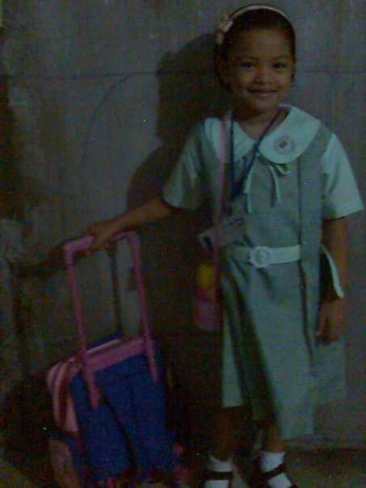

My Resume
Lei Carol D. Pacheco
Basic Information
Name: Lei Carol Pacheco
Parents: Maribeth Pacheco and Napoleon Pacheco Jr.
Sibling: Iris Penn Pacheo
Birth Date: February 22, 2004
Birth Place: Adventist Medical Center, Manila
Age: 18
Nationality: Filipino
Home: East Flores Malibay, Pasay City ; Mahogani Village, Tagaytay City
Contact Details
Facebook: Elsi Pach
Twitter: @_elsiii
Instagram: @leipch
Telegram: @leipach
Reddit:u/kxrolei
Discord: Croselia#6456
Active Email: leicpacheco@gmail.com
Education

Kindergarten 1 and 2: The Treehouse CDLC
Grade 1 and 2: Scoula Madonna Della Scalla
Grade 3 to 6: Timoteo Paez School
High School: Pasay City Science High School
College: University of the Philippines - Diliman
Achievements
- Valedictorian (Kindergarten 1)
- Salutatorian (Kindergarten 2)
- Tagisan ng Talino Second Place (Kindergarten 2)
- Science-Dama First Place (Grade 2-4)
- National Music Competition for Young Artists (NAMCYA) Regional Qualifier 2014 (Rondalla)
- National Music Competition for Young Artists (NAMCYA) National Qualifier 2015 (Solo)
- With Honors JHS
- With High Honors SHS
- First Place Editorial Writing
- President Kapisanan ng mga Mag-aaral sa Filipino (KamFil) 2020-2022
Skills
- I can draw digitally or traditionally. [Portraits, faces, objects]
- I can play musical instruments. [Folk: Bandurria, Octavina, Guitar; String: Violin, Piano; Percussion: Kulintang, Marimba, Dabakan]
- I can sing (a little).
- I paint on canvas (sometimes).
Gallery
The three pictures above depicts my experiences in singing and playing musical instruments.
These are samples of my digital drawings.
Some pictures from when I was a musician trainee in The Bayanihan, National Dance Company of the Philippines.
{kind=link}
{kind=link}
{kind=link}
{kind=link}
{kind=link}
{kind=link}
{kind=link}